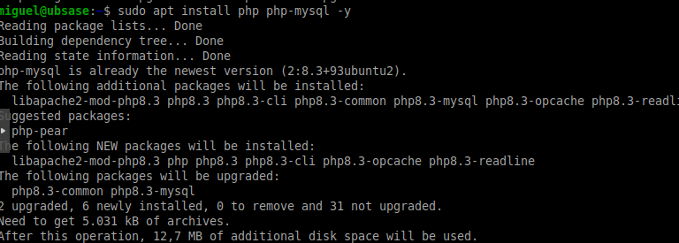
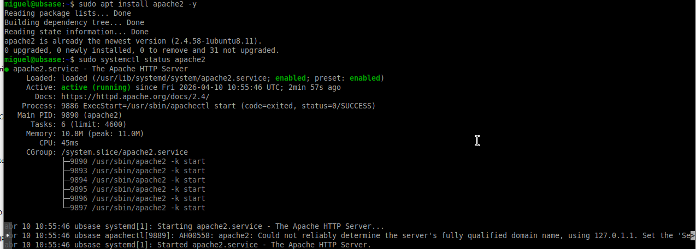
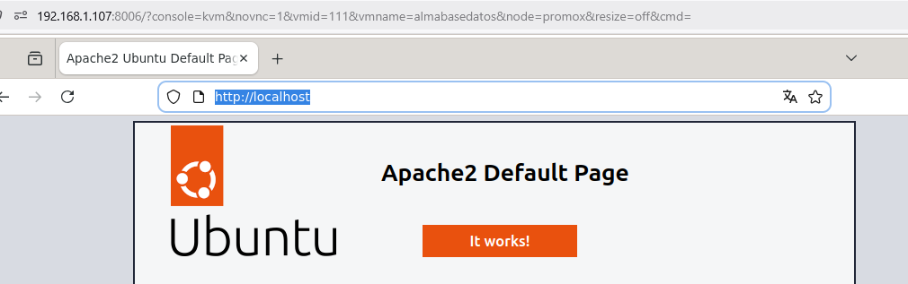
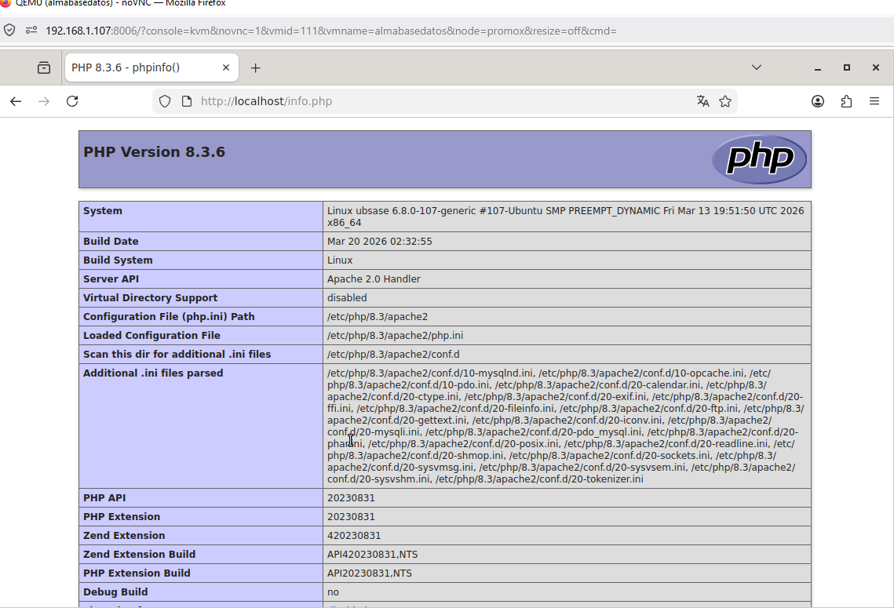
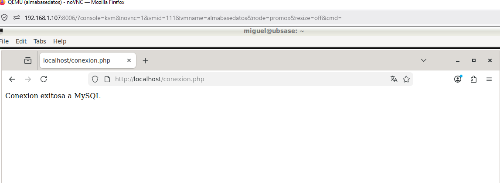

En esta práctica se instala PHP y se comprueba su funcionamiento en Apache, además de verificar la conexión con el servidor MySQL.
Este paso permite validar que el entorno completo de servidor web y base de datos funciona correctamente.
sudo apt install php php-mysql -y
Se instala PHP junto con el módulo necesario para conectarse a MySQL.

Captura ABD13: Instalación de PHP.
sudo apt install apache2 -y
Apache es el servidor web encargado de ejecutar los archivos PHP.

Captura ABD14: Instalación de Apache.
Se accede desde el navegador a:
http://localhost
Se verifica que Apache funciona correctamente mostrando su página por defecto.

Captura ABD15: Página de Apache funcionando.
Se crea el archivo info.php con el siguiente contenido:
<?php
phpinfo();
?>
Al acceder a http://localhost/info.php se muestra la información
del sistema PHP.

Captura ABD16: Información de PHP.
Se crea el archivo conexion.php con el siguiente código:
<?php
$conexion = new mysqli("localhost", "miguel", "1234");
if ($conexion->connect_error) {
die("Error de conexion: " . $conexion->connect_error);
}
echo "Conexion exitosa a MySQL";
?>
Este script establece una conexión con el servidor MySQL.
Al acceder desde el navegador se muestra un mensaje confirmando la conexión.

Captura ABD17: Conexión exitosa con MySQL.
Se ha comprobado el funcionamiento completo del entorno:
Este entorno permite desarrollar aplicaciones web dinámicas conectadas a bases de datos, siendo la base de muchos sistemas actuales.